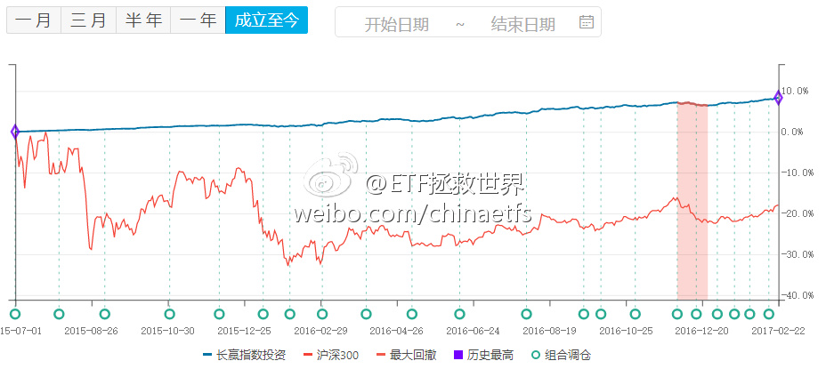
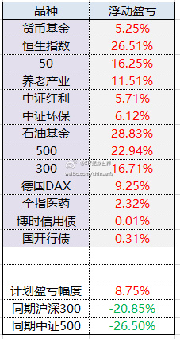

回复@上头云:不是。我已经说过无数次了，每个人的仓位都一定要设计到“涨跌都舒服”的程度。因为每个人情况不同，我不可能给大家设计仓位。但是各位朋友自己应该知道，什么仓位是自己“涨跌都舒服”的。我自己的仓位很舒服，所以我涨跌都高兴。不高兴的只有一种情况，每天心电图一样的走势。@ETF拯救世界:$159938 广发医药 你终于舍得动动了，孽障。
回复@领悟ing_皮妹儿:证券B，分级基金里面的激进子基金。长期持有必死无疑。正常市场情况下，最多6、7年死一次。碰上大牛市上折后死的更快。下折是净值跌到0.25就要4份合并成1份，然后从1块钱继续跌，跌倒0.25再合一次。长期看，死无葬身之地。优势是牛市涨得好，自带1-5倍杠杆。咱们买的没这这个问题@ETF拯救世界:小时候都听过“龟兔赛跑”的故事。长大了，很多人就忘了。无论市场怎么波动、如何暴跌，净值曲线一路向上。找到机会果断出击，买了就要赢，就要赚。当然了，现在的这点收益率，并不是我们追求的。时候未到而已。三年不鸣，不鸣则已，一鸣惊人。爆发式的增长，你我终究会看到。 
回复@小国诸侯:感觉错误。是因为来微博，关注的人少了十万，说话自由，放飞自我了。 //@小国诸侯:E大最近话多了，怎么我觉得你内心不平静了@ETF拯救世界:小时候都听过“龟兔赛跑”的故事。长大了，很多人就忘了。无论市场怎么波动、如何暴跌，净值曲线一路向上。找到机会果断出击，买了就要赢，就要赚。当然了，现在的这点收益率，并不是我们追求的。时候未到而已。三年不鸣，不鸣则已，一鸣惊人。爆发式的增长，你我终究会看到。
小时候都听过“龟兔赛跑”的故事。长大了，很多人就忘了。无论市场怎么波动、如何暴跌，净值曲线一路向上。找到机会果断出击，买了就要赢，就要赚。当然了，现在的这点收益率，并不是我们追求的。时候未到而已。三年不鸣，不鸣则已，一鸣惊人。爆发式的增长，你我终究会看到。